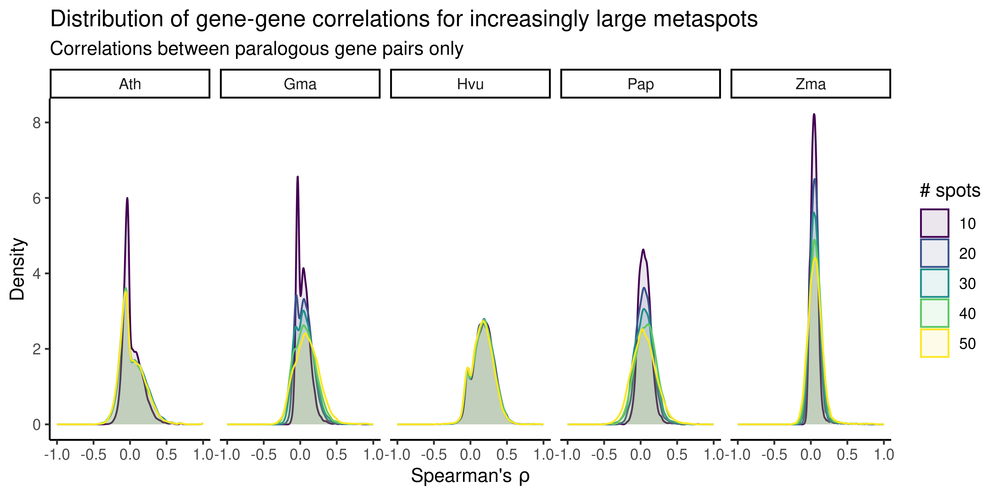
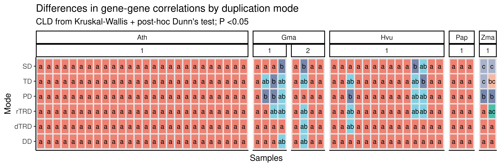
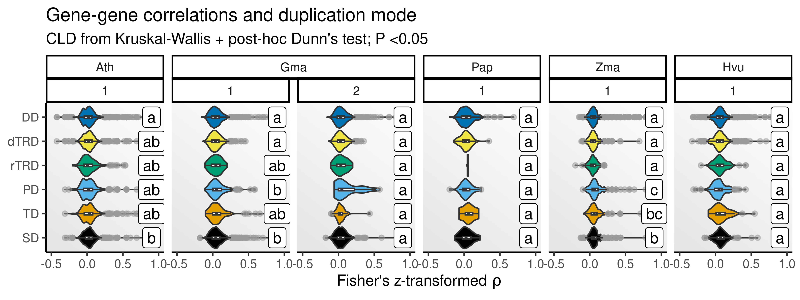
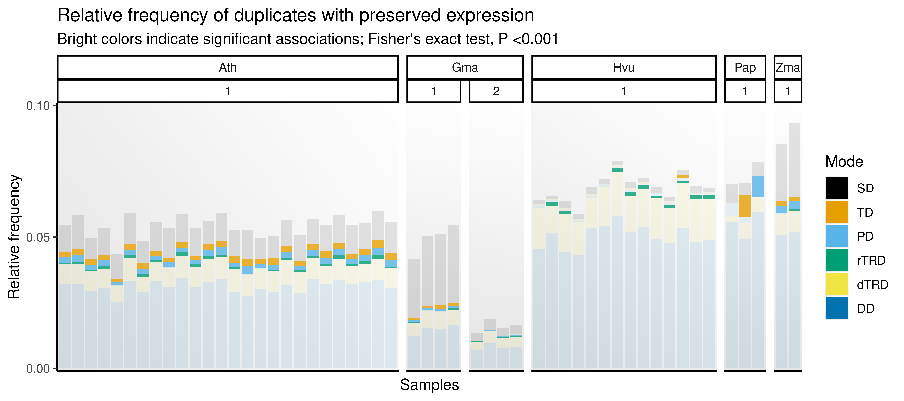
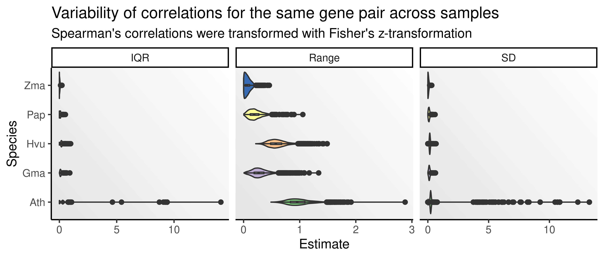
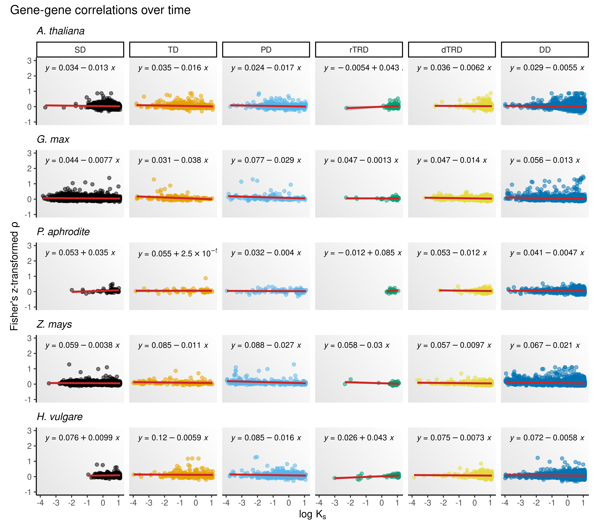
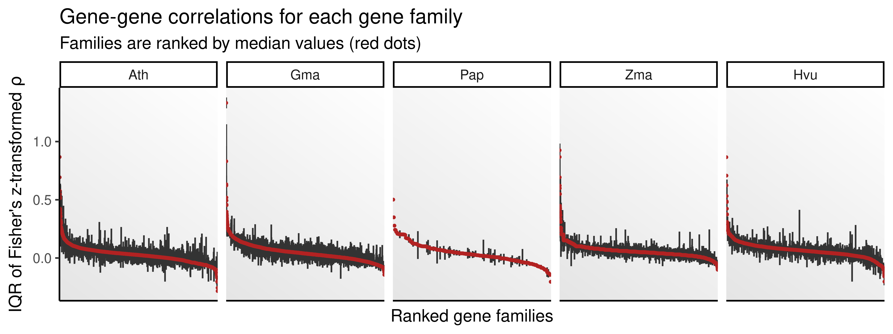

library(here)
library(tidyverse)
library(BioNERO)
library(SpatialExperiment)
library(SummarizedExperiment)
library(patchwork)
library(exdiva)
set.seed(123) # for reproducibility
# Load helper functions
source(here("code", "utils.R"))
source(here("code", "aggregate_spots.R"))
# Plot background
bg <- grid::linearGradient(colorRampPalette(c("gray90", "white"))(100))4 Expression divergence between duplicate pairs
In this chapter, we will explore expression divergence between duplicate pairs using different metrics to investigate if there is biased divergence depending on the duplication mechanisms.
Let’s start by loading the required packages.
Now, let’s load SpatialExperiment objects created in chapter 1.
# Load `SpatialExperiment` objects
ath_spe <- readRDS(here("products", "result_files", "spe", "spe_ath.rds"))
gma_spe <- readRDS(here("products", "result_files", "spe", "spe_gma.rds"))
pap_spe <- readRDS(here("products", "result_files", "spe", "spe_pap.rds"))
zma_spe <- readRDS(here("products", "result_files", "spe", "spe_zma.rds"))
hvu_spe <- readRDS(here("products", "result_files", "spe", "spe_hvu.rds"))
hvu_spe <- lapply(hvu_spe, function(x) return(x[, !is.na(x$tissue)]))And duplicate pairs for each species, classified by age groups, obtained in chapter 2.
# Read duplicated gene pairs for each species
dup_pairs <- readRDS(here("products", "result_files", "dup_list.rds"))
dup_pairs <- lapply(dup_pairs, function(x) return(x$pairs))
# Read duplicated gene pairs with age-based group classifications
pairs_age <- readRDS(here("products", "result_files", "pairs_by_age_group.rds"))We will also load gene family assignments from PLAZA, as well as functional annotation.
# Load gene family assignments from PLAZA
fams <- readRDS(here("products", "result_files", "gene_families.rds"))
go_annot <- readRDS(here("products", "result_files", "functional_annotation.rds"))4.1 Handling sparsity: aggregating counts in SpatialExperiment objects
As demonstrated by Morabito et al. (2023), it is nearly impossible to get high gene-gene correlations in single-cell (and, hence, spatial) transcriptomics data because of the inherent sparsity of such data. A proposed solution is to aggregate cells/spots into metacells/metaspots, what appears to solve the sparsity problem. Another solution that works is to use pseudobulk (aggregating counts by spatial domains), but this can lead to a very small number of columns for samples with a small number of identified spatial domains, introducing biases to correlations.
Here, we will use a helper function aggregate_spots() to aggregate counts into metaspots comprised of ~N spots using k-means clustering (k = number of spots / N) for each spatial domain separately. After aggregating counts, aggregate_spots() calculates size factors with scater::computeLibraryFactors() and generates a logcounts assay with scater::logNormCounts().
In hdWGCNA (Morabito et al. 2023), authors suggest using 7 spots (a spot and its neighbors). However, plant cells are much larger than animals cells. Thus, using metaspots comprised of 7 spots might not sufficiently overcome the challenges of calculating correlations from sparse data. To address that, we will select a sample from each data set, and calculate gene-gene correlations using metaspots comprised of 10 to 50 spots in intervals of 10. Then, we will visualize distributions of gene-gene correlations to choose a suitable metaspot size.
# Calculate gene-gene correlations from a sample using increasingly large metaspots
num_spots <- seq(10, 50, by = 10)
sim_cor <- lapply(num_spots, function(n) {
## Wrapper function to handle `nspots` greater than spot count for a spatial domain
nspots <- function(spe, domain = "cell_type") {
nmin <- min(table(spe[[domain]]))
n <- ifelse(n > nmin, nmin, n)
return(n)
}
# Create metaspot-level counts
spes <- list(
ath = ath_spe[[1]],
gma = gma_spe[[1]],
pap = pap_spe[[1]],
zma = zma_spe[[1]],
hvu = hvu_spe[[1]]
)
spe_metaspots <- list(
ath = aggregate_counts(
spes$ath, spatial_domain = "cell_type",
nspots = nspots(spes$ath, "cell_type")
),
pap = aggregate_counts(
spes$pap, spatial_domain = "clusters",
nspots = nspots(spes$pap, "clusters")
),
gma = aggregate_counts(
spes$gma, spatial_domain = "annotation",
nspots = nspots(spes$gma, "annotation")
),
zma = aggregate_counts(
spes$zma, spatial_domain = "cell_type",
nspots = nspots(spes$zma, "cell_type"), iter.max = 100
),
hvu = aggregate_counts(
spes$hvu, spatial_domain = "tissue",
nspots = nspots(spes$hvu, "tissue")
)
)
# Calculate gene-gene correlations
rho_metaspots <- lapply(names(spe_metaspots), function(x) {
rho_df <- calculate_cor(
spe_metaspots[[x]], dups = dup_pairs[[x]],
assay_name = "logcounts"
) |>
mutate(nspots = n) |>
mutate(species = x)
return(rho_df)
}) |>
bind_rows()
return(rho_metaspots)
}) |>
bind_rows()
# Create a density plot with correlation distros for each number of spots
p_simcor <- sim_cor |>
filter(!is.na(cor)) |>
mutate(
species = str_to_title(species),
nspots = as.factor(nspots)
) |>
ggplot(aes(x = cor, color = nspots, fill = nspots)) +
geom_density(alpha = 0.1) +
scale_color_viridis_d() +
scale_fill_viridis_d() +
facet_wrap(~species, nrow = 1) +
xlim(-1, 1) +
theme_classic() +
labs(
title = "Distribution of gene-gene correlations for increasingly large metaspots",
subtitle = "Correlations between paralogous gene pairs only",
x = expression("Spearman's" ~ rho),
y = "Density", fill = "# spots", color = "# spots"
)
The plot shows that metaspots comprised of 30 spots can sufficiently reduce the amount of noise in gene-gene correlations arising from sparsity. Thus, we will now create SpatialExperiment objects at the metaspot-level using metaspots of size 30. Exceptions will be made for samples in which the smallest spatial domain has less than 30 spots. In such cases, the size of the metaspot will be number of spots in the smallest domain.
# Aggregating counts using metaspots
spe_metaspots <- list(
ath = lapply(
ath_spe, aggregate_counts, spatial_domain = "cell_type", nspots = 30
),
gma = lapply(
gma_spe, aggregate_counts, spatial_domain = "annotation", nspots = 30
),
pap = lapply(
pap_spe, aggregate_counts, spatial_domain = "clusters", nspots = 30
),
zma = lapply(
zma_spe, aggregate_counts, spatial_domain = "cell_type",
iter.max = 100, nspots = 30
),
hvu = lapply(
hvu_spe, aggregate_counts, spatial_domain = "tissue", nspots = 30
)
)4.2 Comparing distributions of gene-gene correlations by duplication mode
Here, we will calculate Spearman’s correlations between duplicate pairs and compare the distributions of correlation coefficients by duplication mode.
# Calculate Spearman's correlations
rho_metaspots <- lapply(names(spe_metaspots), function(x) {
rho_df <- lapply(
spe_metaspots[[x]], calculate_cor, dups = dup_pairs[[x]],
assay_name = "logcounts"
) |>
dplyr::bind_rows(.id = "sample")
return(rho_df)
})
names(rho_metaspots) <- names(spe_metaspots)
# Remove missing values
rho_metaspots <- lapply(rho_metaspots, function(x) {
return(x[!is.na(x$cor), ])
})Next, for each sample, we will test for significant differences by duplication mode using Kruskal-Wallis tests followed by a post-hoc Dunn’s test. To account for differences in ages between gene pairs, we will do this separately for each age group.
# Add age group info to pairs
rho_metaspots_age <- lapply(seq_along(rho_metaspots), function(x) {
return(pairs_age[[x]] |> dplyr::inner_join(rho_metaspots[[x]]))
})
names(rho_metaspots_age) <- names(rho_metaspots)
# Compare distros
#' Wrapper function to compare distros with Kruskal-Wallis + Dunn
compare_cors <- function(rho_df) {
# Add a variable indicating sample + Ks peak
rho_df$id <- paste0(rho_df$sample, "_", rho_df$peak)
ids <- unique(rho_df$id)
# Perform tests and get CLD for each sample-peak
cld_df <- Reduce(rbind, lapply(ids, function(x) {
fdf <- rho_df[rho_df$id == x, ]
# Perform Kruskal-Wallis test followed by a post-hoc Dunn's test
cld <- cld_kw_dunn(fdf, value = "cor")
cld$sample <- unique(fdf$sample)
cld$peak <- unique(fdf$peak)
return(cld)
}))
return(cld_df)
}
# Combine test results into a single data frame
comp_metaspots <- bind_rows(
compare_cors(rho_metaspots_age$ath) |> mutate(species = "Ath"),
compare_cors(rho_metaspots_age$gma) |> mutate(species = "Gma"),
compare_cors(rho_metaspots_age$pap) |> mutate(species = "Pap"),
compare_cors(rho_metaspots_age$zma) |> mutate(species = "Zma"),
compare_cors(rho_metaspots_age$hvu) |> mutate(species = "Hvu")
) Now, we will visualize results with a heatmap showing CLDs for all samples.
# Plot heatmap with CLDs
p_heatmap_rho <- comp_metaspots |>
mutate(
Group = factor(
Group, levels = rev(c("SD", "TD", "PD", "rTRD", "dTRD", "DD"))
)
) |>
ggplot(aes(x = sample, y = Group, fill = Letter)) +
geom_tile(color = "gray90", linewidth = 0.8, alpha = 0.7) +
geom_text(aes(label = Letter), size = 3) +
ggh4x::facet_nested(~ species + peak, scales = "free", space = "free") +
theme_classic() +
theme(
axis.text.x = element_blank(),
axis.ticks.x = element_blank()
) +
labs(
title = "Differences in gene-gene correlations by duplication mode",
subtitle = "CLD from Kruskal-Wallis + post-hoc Dunn's test; P <0.05",
x = "Samples", y = "Mode"
) +
theme(
legend.position = "none"
) +
ggsci::scale_fill_npg()
p_heatmap_rho
The heatmap shows that differences in expression divergence by duplication modes vary not only by species, but also by sample (slide). To account for variations across samples, we will repeat the analyses above, but now using the mean correlations for each gene pair across samples (so that we have a single, summarized distribution for each species). Then, we will compare the distributions of gene-gene correlations by duplication mode as done before.
# Get mean Fisher's Z-transformed rho estimates
zrho_mean <- bind_rows(rho_metaspots_age, .id = "species") |>
mutate(
cor = signif(cor, 1),
cor = 0.5 * log((1 + cor) / (1 - cor)),
pair = str_c(dup1, dup2, sep = "_"),
species_peak = str_c(species, peak, sep = "_")
) |>
group_by(pair, peak) |>
mutate(mean_cor = mean(cor)) |>
ungroup() |>
distinct(pair, peak, .keep_all = TRUE) |>
mutate(
species = str_to_title(species),
species = factor(species, levels = c("Ath", "Gma", "Pap", "Zma", "Hvu")),
type = factor(type, levels = c("SD", "TD", "PD", "rTRD", "dTRD", "DD")),
peak = as.character(peak)
) |>
dplyr::select(-c(sample, cor, pair))
# Compare distributions
zrho_cld <- lapply(
split(zrho_mean, zrho_mean$species_peak),
cld_kw_dunn, value = "mean_cor"
) |>
bind_rows(.id = "species_peak") |>
tidyr::separate(species_peak, c("species", "peak"), sep = "_") |>
dplyr::rename(type = Group) |>
mutate(
species = str_to_title(species),
species = factor(species, levels = c("Ath", "Gma", "Pap", "Zma", "Hvu")),
type = factor(type, levels = c("SD", "TD", "PD", "rTRD", "dTRD", "DD")),
peak = as.character(peak)
)
# Plot distributions with CLDs
p_zrho_mean <- ggplot(zrho_mean, aes(x = mean_cor, y = type)) +
geom_violin(aes(fill = type), scale = "width", show.legend = FALSE) +
scale_fill_manual(values = palette.colors()) +
geom_boxplot(width = 0.1, outlier.color = "gray60", outlier.alpha = 0.5) +
geom_label(
data = zrho_cld,
aes(x = 0.9, y = type, label = Letter)
) +
ggh4x::facet_nested(~ species + peak, scales = "free", space = "free") +
labs(
x = expression("Fisher's z-transformed" ~ rho),
y = NULL,
title = "Gene-gene correlations and duplication mode",
subtitle = "CLD from Kruskal-Wallis + post-hoc Dunn's test; P <0.05"
) +
scale_x_continuous(limits = c(-0.5, 1)) +
theme_classic() +
theme(panel.background = element_rect(fill = bg))
The figure shows that differences in gene-gene correlations by duplication mode exist, but not for all species. For Arabidopsis, maize, and younger soybean duplicates, segmental and proximal duplicates (and tandem duplicates in case of maize) are more similar than duplicates derived from other modes. In Phalaenopsis sp., barley, and older soybean duplicates, there are no differences in correlations by duplication mode. Interestingly, there seems to be an effect of duplicate age on differences. For instance, in soybean, younger duplicates differ in correlations based on their duplication mode, but not older ones. Likewise, (young) maize duplicates (originated at ~16 MYA) differ in correlations based on duplication modes, but not barley duplicates, which are much older (originated at ~53 MYA). The age of duplicates could also explain why orchid duplicates did not display differences in gene-gene correlations. An exception exists for Arabidopsis, whose duplicates display differences in correlations by duplication mode despite their old ages (~51 to 72 MYA). Such discrepancies could also be partially explained by tissue-specific differences in expression divergence. For instance, duplicates originating from different modes might diverge differently in leaves (tissue profiled in the Arabidopsis data set), but not in other tissues.
4.3 Frequency of pairs with significant expression preservation
Here, to assess whether observed correlations are greater than the expected by chance (and, hence, indicating significant expression preservation), we will randomly sample 10,000 gene pairs and calculate Spearman’s correlations to generate a null distribution. Then, we will compare the observed correlations to such a null distribution to determine whether correlations are greater than the expected.
# Get genes with preserved expression (rho > 95% quantile)
species <- names(spe_metaspots)
preserved <- lapply(species, function(x) {
df <- lapply(seq_along(spe_metaspots[[x]]), function(i) {
## Get cut-off based on null distribution
pairs <- data.frame(
dup1 = sample(rownames(spe_metaspots[[x]][[i]]), 1e4, replace = TRUE),
dup2 = sample(rownames(spe_metaspots[[x]][[i]]), 1e4, replace = TRUE)
)
nulls <- calculate_cor(
spe_metaspots[[x]][[i]], dups = pairs, assay_name = "logcounts"
)
cutoff <- quantile(nulls$cor, 0.95, na.rm = TRUE)
# Get only pairs with rho > `cutoff`
sample_id <- names(spe_metaspots[[x]])[i]
preserved <- rho_metaspots_age[[x]] |>
dplyr::filter(
sample == sample_id,
cor > cutoff
)
return(preserved)
}) |> dplyr::bind_rows()
return(df)
}) |> bind_rows()Now, we will test for significant associations between duplication modes and expression preservation. The goal here is to find out if pairs originating from certain duplication modes are more preserved than the expected by chance. Then, we will visualize results with a stacked barplot showing the relative frequency of preserved pairs (by mode) for each sample.
# Perform enrichment of preserved genes by duplication mode
preserved_list <- preserved |>
mutate(
pair = str_c(dup1, dup2, sep = "_"),
sample_peak = str_c(sample, peak, sep = "_")
) |>
select(pair, sample_peak)
preserved_list <- split(preserved_list, preserved_list$sample_peak)
sea_df <- lapply(preserved_list, function(x) {
dups <- bind_rows(rho_metaspots_age, .id = "species") |>
mutate(pair = str_c(dup1, dup2, sep = "_")) |>
left_join(x, by = "pair") |>
dplyr::select(pair, type)
res_df <- HybridExpress::ora(
genes = x$pair,
annotation <- as.data.frame(dups),
background = dups$pair,
min_setsize = 5, max_setsize = 1e4, alpha = 0.001
)
return(res_df)
}) |>
bind_rows(.id = "sample_peak")
# Get relative frequency of preserved pairs by mode for each sample
pdata_preserved <- preserved |>
dplyr::count(sample, peak, type) |>
dplyr::rename(n_preserved = n) |>
right_join(
bind_rows(rho_metaspots_age) |>
dplyr::count(sample) |>
dplyr::rename(n_all = n)
) |>
mutate(
perc_preserved = n_preserved / n_all
) |>
select(sample, peak, type, perc_preserved) |>
pivot_longer(cols = perc_preserved) |>
left_join(
bind_rows(rho_metaspots_age, .id = "species") |>
select(sample, species) |>
distinct()
) |>
mutate(sample_peak = str_c(sample, peak, sep = "_")) |>
left_join(
sea_df |> dplyr::select(sample_peak, type = term, padj)
) |>
mutate(
type = factor(type, levels = c("SD", "TD", "PD", "rTRD", "dTRD", "DD")),
species = str_to_title(species)
) |>
mutate(
ltype = ifelse(!is.na(padj), 1, 0),
alpha = ifelse(!is.na(padj), 0.9, 0.2)
)
# Create barplot
p_preserved <- ggplot(
pdata_preserved, aes(x = sample, y = value)
) +
geom_bar(
aes(fill = type, alpha = alpha),
position = "stack", stat = "identity"
) +
scale_alpha_identity() +
ggh4x::facet_nested(~ species + peak, scales = "free", space = "free") +
scale_fill_manual(values = palette.colors()) +
theme_classic() +
scale_y_continuous(
limits = c(0, 0.10),
breaks = seq(0, 0.10, by = 0.05),
expand = expansion(mult = 0.01)
) +
theme(
panel.background = element_rect(fill = bg),
axis.ticks.x = element_blank(),
axis.text.x = element_blank()
) +
labs(
title = "Relative frequency of duplicates with preserved expression",
subtitle = "Bright colors indicate significant associations; Fisher's exact test, P <0.001",
x = "Samples", y = "Relative frequency",
fill = "Mode"
)
p_preserved
The figure shows that the sets of duplicate pairs with preserved expression are significantly overrepresented in tandem and proximal duplicates in most species. An exception is the barley data set, in which there is a significant overrepresentation of retrotransposed pairs in most samples, while only one sample displays overrepresentation of tandem duplicates. The association between tandem/proximal duplicates and pairs with preserved expression is likely due to preserved cis-regulatory element between ancestral genes and copies in these duplication modes.
4.4 Expression divergence over time
Here, we will explore how gene-gene correlations change over time using \(K_s\) as a proxy for time. Since there are many samples for some species, visualizing \(\rho\) over time for each sample separately is not feasible. A workaround is to, for each gene pair, calculate mean correlations across samples in species S, and then use mean correlations as a summary statistic. However, we first need to make sure that correlations for the same gene pairs do not vary much across samples. To verify that, let’s calculate some measure of spread and plot them for each species.
# Calculate variability of correlations for the same pair across samples
cor_var <- lapply(rho_metaspots, function(sp) {
## Get a wide matrix with correlations for each gene pair
cor_wide <- sp |>
dplyr::filter(Ks <3) |>
mutate(pair = str_c(dup1, dup2, sep = "_")) |>
select(pair, cor, sample) |>
mutate(cor = 0.5 * log((1 + cor) / (1 - cor))) |>
pivot_wider(names_from = sample, values_from = cor) |>
tibble::column_to_rownames("pair") |>
as.matrix()
## Calculate metrics
df <- data.frame(
SD = apply(cor_wide, 1, sd, na.rm = TRUE),
IQR = apply(cor_wide, 1, IQR, na.rm = TRUE),
Range = apply(cor_wide, 1, function(x) max(x) - min(x))
)
return(df)
}) |>
bind_rows(.id = "species") |>
mutate(species = str_to_title(species)) |>
pivot_longer(cols = !species, names_to = "metrics", values_to = "value")
# Plot CV for each species
p_corvar <- cor_var |>
ggplot(aes(x = value, y = species)) +
geom_violin(aes(fill = species)) +
geom_boxplot(width = 0.05) +
facet_wrap(~metrics, scales = "free_x", nrow = 1) +
scale_fill_manual(values = palette.colors(palette = "Accent")) +
theme_classic() +
theme(
panel.background = element_rect(fill = bg),
legend.position = "none"
) +
labs(
title = "Variability of correlations for the same gene pair across samples",
subtitle = "Spearman's correlations were transformed with Fisher's z-transformation",
x = "Estimate", y = "Species"
)
p_corvar
The figure shows that correlations for the same pairs across different samples do not vary much, despite some outliers for the A. thaliana data set. Hence, we can safely summarize correlations by using the mean correlation across data sets for each species.
Next, we will plot a scatterplot showing mean correlations between gene pairs as a function of time (here, represented by \(K_s\)). Following previous papers (Gu et al. 2002; Makova and Li 2003; Ganko, Meyers, and Vision 2007), we will transform Spearman’s rho using Fisher’s z-transformation, defined as:
\[\frac{1}{2} log(\frac{1+\rho}{1-\rho})\]
However, we will first check which association is best supported for mean correlations and \(K_s\): linear or exponential. For that, we will fit two linear models for each duplication mode in each species:
lm(zrho ~ Ks)- linear associationlm(zrho ~ logks)- exponential association
Then, we will use AIC and BIC to check which model is best supported.
# Get mean rho for all duplicates in species
mean_rho_all <- lapply(rho_metaspots, function(sp) {
## Get mean cor per species
mrho <- sp |>
dplyr::filter(Ks <3) |>
mutate(
cor = signif(cor, 1),
cor = 0.5 * log((1 + cor) / (1 - cor)),
pair = str_c(dup1, dup2, sep = "_")
) |>
group_by(pair) |>
mutate(mean_cor = mean(cor, na.rm = TRUE)) |>
ungroup() |>
distinct(pair, .keep_all = TRUE) |>
mutate(
type = factor(type, levels = c("SD", "TD", "PD", "rTRD", "dTRD", "DD"))
) |>
dplyr::select(zrho = mean_cor, Ks, Ka, type) |>
dplyr::filter(!zrho %in% c(Inf, -Inf)) |>
dplyr::filter(!is.na(zrho))
return(mrho)
})
names(mean_rho_all) <- str_to_title(names(mean_rho_all))
# Fit models
sp <- names(mean_rho_all)
dmodes <- c("SD", "TD", "PD", "rTRD", "dTRD", "DD")
model_comp <- lapply(sp, function(x) {
df <- mean_rho_all[[x]] |>
mutate(logks = log(Ks))
comp <- Reduce(rbind, lapply(dmodes, function(y) {
m1 <- lm(zrho ~ Ks, data = df |> dplyr::filter(type == y))
m2 <- lm(zrho ~ logks, data = df |> dplyr::filter(type == y))
bic <- BIC(m1, m2)
aic <- AIC(m1, m2)
result <- data.frame(
BIC1 = bic$BIC[1],
BIC2 = bic$BIC[2],
AIC1 = aic$AIC[1],
AIC2 = aic$AIC[2],
Rsq1 = summary(m1)$r.squared,
Rsq2 = summary(m2)$r.squared,
species = x,
type = y
) |>
mutate(
best_BIC = ifelse(BIC1 < BIC2, "m1", "m2"),
best_AIC = ifelse(AIC1 < AIC2, "m1", "m2")
)
return(result)
}))
}) |> bind_rows()Model selection metrics indicate that a log-log regression outperforms a simple linear regression, indicating that the two variables (\(K_s\) and correlations) are exponentially associated. Let’s visualize such relationships.
# Define helper function to plot scatterplot of cor ~ Ks
plot_cor_rates <- function(df, x = "Ks", y = "zrho", by = "type") {
pal <- palette.colors(6)
pal[5] <- "#e4d93f"
p <- ggplot(df, aes(x = .data[[x]], y = .data[[y]])) +
geom_point(aes(color = .data[[by]]), alpha = 0.5) +
scale_color_manual(values = pal) +
facet_wrap(vars(.data[[by]]), nrow = 1) +
theme_classic() +
coord_cartesian(ylim = c(-1, 3)) +
theme(
legend.position = "none",
panel.background = element_rect(fill = bg)
) +
labs(
x = expression(log ~ K[s]),
y = expression("Spearman's" ~ rho),
title = "Expression divergence over time"
)
return(p)
}
# Create a scatterplot with cor ~ Ks - all samples from a species combined
p_rho_ks <- lapply(mean_rho_all, function(x) {
## Create a scatterplot
p_combined <- x |>
mutate(logks = log(Ks)) |>
plot_cor_rates(x = "logks") +
geom_smooth(method = "lm", color = "firebrick3") +
ggpubr::stat_regline_equation(
aes(label = ..eq.label..),
label.x = -3.7, label.y = 2.5, size = 3
) +
scale_x_continuous(limits = c(-4, 1.10)) +
labs(title = NULL, y = expression("Fisher's z-transformed" ~ rho))
return(p_combined)
})
# Combine plots into one
p_rho_ks_final <- wrap_plots(
p_rho_ks$Ath + labs(subtitle = "A. thaliana", x = NULL),
p_rho_ks$Gma + labs(subtitle = "G. max", x = NULL) +
theme(
strip.background = element_blank(),
strip.text = element_blank()
),
p_rho_ks$Pap + labs(subtitle = "P. aphrodite", x = NULL) +
theme(
strip.background = element_blank(),
strip.text = element_blank()
),
p_rho_ks$Zma + labs(subtitle = "Z. mays", x = NULL) +
theme(
strip.background = element_blank(),
strip.text = element_blank()
),
p_rho_ks$Hvu + labs(subtitle = "H. vulgare") +
theme(
strip.background = element_blank(),
strip.text = element_blank()
),
ncol = 1
) +
plot_annotation(title = "Gene-gene correlations over time") +
plot_layout(axes = "collect") &
theme(
plot.subtitle = element_text(face = "italic")
)
p_rho_ks_final
Overall, the figure shows that expression divergence increases (i.e., paralogous pairs become more different in expression profiles) over time. A positive slope (\(\beta_1\)) can be observed for retrotransposed duplicates in four out of five species (except for Z. mays), suggesting that older duplicates tend to have more similar expression profiles for this duplication mode. However, the number of retrotransposed duplicates is much smaller than the number of duplicates originating from all other mechanisms.
4.5 Expression divergence by gene family
Here, we will explore how duplicates in each gene family diverge, looking for families that tend to have more similar expression profiles (i.e., less divergence), and families with more divergent expression profiles. We will start by assigning families to each pair and ranking families by median correlations.
# Assign families to each pair
zrho_fams <- zrho_mean |>
inner_join(fams |> dplyr::select(dup1 = gene, family)) |>
filter(!mean_cor %in% c(Inf, -Inf))
# Get Q1, Q3, median, and rank families by median
fams_ranked <- zrho_fams |>
group_by(species, family) |>
summarise(
q1 = quantile(mean_cor, 0.25, na.rm = TRUE),
median = quantile(mean_cor, 0.5, na.rm = TRUE),
q3 = quantile(mean_cor, 0.75, na.rm = TRUE)
) |>
arrange(species, -median) |>
ungroup()Next, we will visualize distributions of correlations for each family using boxplots. We will use median correlations calculated above to sort boxes from highest to lowest correlation.
# Visualize IQRs of correlations per family
p_zrho_fam <- fams_ranked |>
mutate(
species_family = str_c(species, family, sep = "_"),
species_family = as_factor(species_family)
) |>
ggplot(aes(x = species_family)) +
geom_linerange(
aes(ymin = q1, ymax = q3),
color = "gray20"
) +
geom_point(aes(y = median), color = "firebrick", size = 0.5) +
facet_wrap(~species, scales = "free_x", nrow = 1) +
theme_classic() +
theme(
axis.text.x = element_blank(),
axis.ticks.x = element_blank(),
panel.background = element_rect(fill = bg)
) +
labs(
title = "Gene-gene correlations for each gene family",
subtitle = "Families are ranked by median values (red dots)",
x = "Ranked gene families",
y = expression("IQR of Fisher's z-transformed" ~ rho)
)
p_zrho_fam
The figure shows that expression divergence varies by gene family. Interestingly, some families contain gene pairs that are highly similar, and some other families contain gene pairs that are highly dissimilar, suggesting that there might be selection pressures acting to preserve expression similarity in some paralogs, but not in others.
To better understand these families with highly similar/dissimilar gene pairs, we will perform functional enrichment analyses to profile their functions.
# Select top 10% of the families with highest median correlations
top10_high <- fams_ranked |>
group_by(species) |>
slice_max(median, prop = 0.1) |>
ungroup()
top10_low <- fams_ranked |>
group_by(species) |>
slice_min(median, prop = 0.1) |>
ungroup()
# Perform overrepresentation analyses
sp <- names(go_annot)
sea <- lapply(sp, function(x) {
## Get top 10% families (highest and lowest correlations)
t10_high <- top10_high |>
filter(species == x) |>
pull(family)
t10_low <- top10_low |>
filter(species == x) |>
pull(family)
## Get gene sets
genes_high <- fams |>
filter(family %in% t10_high, species == tolower(x)) |>
pull(gene)
genes_low <- fams |>
filter(family %in% t10_low, species == tolower(x)) |>
pull(gene)
## Perform SEA
bg <- zrho_fams |>
filter(species == x)
bg <- unique(bg$dup1, bg$dup2)
df_high <- HybridExpress::ora(
genes = genes_high,
annotation = as.data.frame(go_annot[[x]]),
background = bg
) |>
mutate(category = "highcor")
df_low <- HybridExpress::ora(
genes = genes_low,
annotation = as.data.frame(go_annot[[x]]),
background = bg
) |>
mutate(category = "lowcor")
final_df <- bind_rows(df_high, df_low) |>
mutate(species = x)
return(final_df)
}) |>
bind_rows()Upon manual inspection and curation of results (in object sea), we observed that families with highly similar paralogs are related to basic cellular processes, such as chromatin assembly, regulation of transcription, translation, splicing, signaling, amino acid and lipid metabolism, etc. Families with highly dissimilar paralogs were overrepresented in genes associated with more specific processes, such as defense to symbionts, leaf senescence, flower development, detoxification, auxin metabolism and transport, ABA biosynthesis, sucrose metabolism and transport, and cell wall biogenesis and remodeling.
Saving objects
Finally, we will save important objects to reuse later.
# Save objects as .rds files
## List of data frames with gene-gene correlations for each species
saveRDS(
rho_metaspots, compress = "xz",
file = here("products", "result_files", "spearman_rho_metaspots.rds")
)
## Mean Z-transformed rho estimates per species
saveRDS(
zrho_mean, compress = "xz",
file = here("products", "result_files", "mean_zrho_metaspots.rds")
)
## CLD from Kruskal-Wallis + post-hoc Dunn's test
saveRDS(
comp_metaspots, compress = "xz",
file = here("products", "result_files", "rho_comp_metaspots.rds")
)
# Duplicate pairs with significantly preserved gene expression
saveRDS(
preserved, compress = "xz",
file = here("products", "result_files", "pairs_preserved_expression.rds")
)
# Plots
## Simulation of gene-gene correlations for increasingly large metaspots
saveRDS(
p_simcor, compress = "xz",
file = here("products", "plots", "simulation_rho_metaspots.rds")
)
## Heatmaps of CLD for differences in gene-gene correlations
saveRDS(
p_heatmap_rho, compress = "xz",
file = here("products", "plots", "rho_comp_heatmap.rds")
)
## Distribution of mean Fisher's Z-transformed \rho estimates
saveRDS(
p_zrho_mean, compress = "xz",
file = here("products", "plots", "mean_zrho_comp.rds")
)
## Relative frequency of pairs with preserved expression
saveRDS(
p_preserved, compress = "xz",
file = here("products", "plots", "pairs_preserved_expression_relfreq.rds")
)
## Variability of correlations for the same gene pairs across samples
saveRDS(
p_corvar, compress = "xz",
file = here("products", "plots", "rho_variation_across_samples.rds")
)
## Expression divergence over time - all samples combined
saveRDS(
p_rho_ks_final, compress = "xz",
file = here("products", "plots", "expression_divergence_over_time.rds")
)
## IQR of \rho distros for each gene family
saveRDS(
p_zrho_fam, compress = "xz",
file = here("products", "plots", "IQR_rho_per_gene_family.rds")
)
## Enrichment results for families with highly similar and dissimilar paralogs
saveRDS(
sea, compress = "xz",
file = here("products", "result_files", "SEA_highly_similar_dissimilar_fams.rds")
)Session info
This document was created under the following conditions:
─ Session info ───────────────────────────────────────────────────────────────
setting value
version R version 4.4.1 (2024-06-14)
os Ubuntu 22.04.4 LTS
system x86_64, linux-gnu
ui X11
language (EN)
collate en_US.UTF-8
ctype en_US.UTF-8
tz Europe/Brussels
date 2025-04-23
pandoc 3.2 @ /usr/lib/rstudio/resources/app/bin/quarto/bin/tools/x86_64/ (via rmarkdown)
─ Packages ───────────────────────────────────────────────────────────────────
package * version date (UTC) lib source
abind 1.4-5 2016-07-21 [1] CRAN (R 4.4.1)
annotate 1.82.0 2024-04-30 [1] Bioconductor 3.19 (R 4.4.1)
AnnotationDbi 1.66.0 2024-05-01 [1] Bioconductor 3.19 (R 4.4.1)
backports 1.5.0 2024-05-23 [1] CRAN (R 4.4.1)
base64enc 0.1-3 2015-07-28 [1] CRAN (R 4.4.1)
beeswarm 0.4.0 2021-06-01 [1] CRAN (R 4.4.1)
Biobase * 2.64.0 2024-04-30 [1] Bioconductor 3.19 (R 4.4.1)
BiocGenerics * 0.50.0 2024-04-30 [1] Bioconductor 3.19 (R 4.4.1)
BiocParallel 1.38.0 2024-04-30 [1] Bioconductor 3.19 (R 4.4.1)
BioNERO * 1.12.0 2024-04-30 [1] Bioconductor 3.19 (R 4.4.1)
Biostrings 2.72.1 2024-06-02 [1] Bioconductor 3.19 (R 4.4.1)
bit 4.0.5 2022-11-15 [1] CRAN (R 4.4.1)
bit64 4.0.5 2020-08-30 [1] CRAN (R 4.4.1)
blob 1.2.4 2023-03-17 [1] CRAN (R 4.4.1)
broom 1.0.6 2024-05-17 [1] CRAN (R 4.4.1)
cachem 1.1.0 2024-05-16 [1] CRAN (R 4.4.1)
car 3.1-2 2023-03-30 [1] CRAN (R 4.4.1)
carData 3.0-5 2022-01-06 [1] CRAN (R 4.4.1)
checkmate 2.3.1 2023-12-04 [1] CRAN (R 4.4.1)
circlize 0.4.16 2024-02-20 [1] CRAN (R 4.4.1)
cli 3.6.3 2024-06-21 [1] CRAN (R 4.4.1)
clue 0.3-65 2023-09-23 [1] CRAN (R 4.4.1)
cluster 2.1.6 2023-12-01 [1] CRAN (R 4.4.1)
coda 0.19-4.1 2024-01-31 [1] CRAN (R 4.4.1)
codetools 0.2-20 2024-03-31 [1] CRAN (R 4.4.1)
colorspace 2.1-0 2023-01-23 [1] CRAN (R 4.4.1)
ComplexHeatmap 2.21.1 2024-09-24 [1] Github (jokergoo/ComplexHeatmap@0d273cd)
crayon 1.5.3 2024-06-20 [1] CRAN (R 4.4.1)
data.table 1.15.4 2024-03-30 [1] CRAN (R 4.4.1)
DBI 1.2.3 2024-06-02 [1] CRAN (R 4.4.1)
DelayedArray 0.30.1 2024-05-07 [1] Bioconductor 3.19 (R 4.4.1)
digest 0.6.36 2024-06-23 [1] CRAN (R 4.4.1)
doParallel 1.0.17 2022-02-07 [1] CRAN (R 4.4.1)
dplyr * 1.1.4 2023-11-17 [1] CRAN (R 4.4.1)
dynamicTreeCut 1.63-1 2016-03-11 [1] CRAN (R 4.4.1)
edgeR 4.2.1 2024-07-14 [1] Bioconductor 3.19 (R 4.4.1)
evaluate 0.24.0 2024-06-10 [1] CRAN (R 4.4.1)
exdiva * 0.99.0 2024-08-21 [1] Bioconductor
fansi 1.0.6 2023-12-08 [1] CRAN (R 4.4.1)
farver 2.1.2 2024-05-13 [1] CRAN (R 4.4.1)
fastcluster 1.2.6 2024-01-12 [1] CRAN (R 4.4.1)
fastmap 1.2.0 2024-05-15 [1] CRAN (R 4.4.1)
forcats * 1.0.0 2023-01-29 [1] CRAN (R 4.4.1)
foreach 1.5.2 2022-02-02 [1] CRAN (R 4.4.1)
foreign 0.8-87 2024-06-26 [1] CRAN (R 4.4.1)
Formula 1.2-5 2023-02-24 [1] CRAN (R 4.4.1)
genefilter 1.86.0 2024-04-30 [1] Bioconductor 3.19 (R 4.4.1)
generics 0.1.3 2022-07-05 [1] CRAN (R 4.4.1)
GENIE3 1.26.0 2024-04-30 [1] Bioconductor 3.19 (R 4.4.1)
GenomeInfoDb * 1.40.1 2024-05-24 [1] Bioconductor 3.19 (R 4.4.1)
GenomeInfoDbData 1.2.12 2024-07-24 [1] Bioconductor
GenomicRanges * 1.56.1 2024-06-12 [1] Bioconductor 3.19 (R 4.4.1)
GetoptLong 1.0.5 2020-12-15 [1] CRAN (R 4.4.1)
ggbeeswarm 0.7.2 2023-04-29 [1] CRAN (R 4.4.1)
ggdendro 0.2.0 2024-02-23 [1] CRAN (R 4.4.1)
ggh4x 0.2.8 2024-01-23 [1] CRAN (R 4.4.1)
ggnetwork 0.5.13 2024-02-14 [1] CRAN (R 4.4.1)
ggplot2 * 3.5.1 2024-04-23 [1] CRAN (R 4.4.1)
ggpubr 0.6.0 2023-02-10 [1] CRAN (R 4.4.1)
ggrepel 0.9.5 2024-01-10 [1] CRAN (R 4.4.1)
ggsignif 0.6.4.9000 2024-12-12 [1] Github (const-ae/ggsignif@705495f)
GlobalOptions 0.1.2 2020-06-10 [1] CRAN (R 4.4.1)
glue 1.7.0 2024-01-09 [1] CRAN (R 4.4.1)
GO.db 3.19.1 2024-07-24 [1] Bioconductor
gridExtra 2.3 2017-09-09 [1] CRAN (R 4.4.1)
gtable 0.3.5 2024-04-22 [1] CRAN (R 4.4.1)
here * 1.0.1 2020-12-13 [1] CRAN (R 4.4.1)
Hmisc 5.1-3 2024-05-28 [1] CRAN (R 4.4.1)
hms 1.1.3 2023-03-21 [1] CRAN (R 4.4.1)
htmlTable 2.4.3 2024-07-21 [1] CRAN (R 4.4.1)
htmltools 0.5.8.1 2024-04-04 [1] CRAN (R 4.4.1)
htmlwidgets 1.6.4 2023-12-06 [1] CRAN (R 4.4.1)
httr 1.4.7 2023-08-15 [1] CRAN (R 4.4.1)
igraph 2.0.3 2024-03-13 [1] CRAN (R 4.4.1)
impute 1.78.0 2024-04-30 [1] Bioconductor 3.19 (R 4.4.1)
intergraph 2.0-4 2024-02-01 [1] CRAN (R 4.4.1)
IRanges * 2.38.1 2024-07-03 [1] Bioconductor 3.19 (R 4.4.1)
iterators 1.0.14 2022-02-05 [1] CRAN (R 4.4.1)
jsonlite 1.8.8 2023-12-04 [1] CRAN (R 4.4.1)
KEGGREST 1.44.1 2024-06-19 [1] Bioconductor 3.19 (R 4.4.1)
knitr 1.48 2024-07-07 [1] CRAN (R 4.4.1)
labeling 0.4.3 2023-08-29 [1] CRAN (R 4.4.1)
lattice 0.22-6 2024-03-20 [1] CRAN (R 4.4.1)
lifecycle 1.0.4 2023-11-07 [1] CRAN (R 4.4.1)
limma 3.60.4 2024-07-17 [1] Bioconductor 3.19 (R 4.4.1)
locfit 1.5-9.10 2024-06-24 [1] CRAN (R 4.4.1)
lubridate * 1.9.3 2023-09-27 [1] CRAN (R 4.4.1)
magick 2.8.4 2024-07-14 [1] CRAN (R 4.4.1)
magrittr 2.0.3 2022-03-30 [1] CRAN (R 4.4.1)
MASS 7.3-61 2024-06-13 [1] CRAN (R 4.4.1)
Matrix 1.7-0 2024-04-26 [1] CRAN (R 4.4.1)
MatrixGenerics * 1.16.0 2024-04-30 [1] Bioconductor 3.19 (R 4.4.1)
matrixStats * 1.3.0 2024-04-11 [1] CRAN (R 4.4.1)
memoise 2.0.1 2021-11-26 [1] CRAN (R 4.4.1)
mgcv 1.9-1 2023-12-21 [1] CRAN (R 4.4.1)
minet 3.62.0 2024-04-30 [1] Bioconductor 3.19 (R 4.4.1)
munsell 0.5.1 2024-04-01 [1] CRAN (R 4.4.1)
NetRep 1.2.7 2023-08-19 [1] CRAN (R 4.4.1)
network 1.18.2 2023-12-05 [1] CRAN (R 4.4.1)
nlme 3.1-165 2024-06-06 [1] CRAN (R 4.4.1)
nnet 7.3-19 2023-05-03 [1] CRAN (R 4.4.1)
patchwork * 1.2.0 2024-01-08 [1] CRAN (R 4.4.1)
pillar 1.9.0 2023-03-22 [1] CRAN (R 4.4.1)
pkgconfig 2.0.3 2019-09-22 [1] CRAN (R 4.4.1)
plyr 1.8.9 2023-10-02 [1] CRAN (R 4.4.1)
png 0.1-8 2022-11-29 [1] CRAN (R 4.4.1)
polynom 1.4-1 2022-04-11 [1] CRAN (R 4.4.1)
preprocessCore 1.66.0 2024-04-30 [1] Bioconductor 3.19 (R 4.4.1)
purrr * 1.0.2 2023-08-10 [1] CRAN (R 4.4.1)
R6 2.5.1 2021-08-19 [1] CRAN (R 4.4.1)
RColorBrewer 1.1-3 2022-04-03 [1] CRAN (R 4.4.1)
Rcpp 1.0.13 2024-07-17 [1] CRAN (R 4.4.1)
readr * 2.1.5 2024-01-10 [1] CRAN (R 4.4.1)
reshape2 1.4.4 2020-04-09 [1] CRAN (R 4.4.1)
RhpcBLASctl 0.23-42 2023-02-11 [1] CRAN (R 4.4.1)
rjson 0.2.21 2022-01-09 [1] CRAN (R 4.4.1)
rlang 1.1.4 2024-06-04 [1] CRAN (R 4.4.1)
rmarkdown 2.27 2024-05-17 [1] CRAN (R 4.4.1)
rpart 4.1.23 2023-12-05 [1] CRAN (R 4.4.1)
rprojroot 2.0.4 2023-11-05 [1] CRAN (R 4.4.1)
RSQLite 2.3.7 2024-05-27 [1] CRAN (R 4.4.1)
rstatix 0.7.2 2023-02-01 [1] CRAN (R 4.4.1)
rstudioapi 0.16.0 2024-03-24 [1] CRAN (R 4.4.1)
S4Arrays 1.4.1 2024-05-20 [1] Bioconductor 3.19 (R 4.4.1)
S4Vectors * 0.42.1 2024-07-03 [1] Bioconductor 3.19 (R 4.4.1)
scales 1.3.0 2023-11-28 [1] CRAN (R 4.4.1)
sessioninfo 1.2.2 2021-12-06 [1] CRAN (R 4.4.1)
shape 1.4.6.1 2024-02-23 [1] CRAN (R 4.4.1)
SingleCellExperiment * 1.26.0 2024-04-30 [1] Bioconductor 3.19 (R 4.4.1)
SparseArray 1.4.8 2024-05-24 [1] Bioconductor 3.19 (R 4.4.1)
SpatialExperiment * 1.14.0 2024-05-01 [1] Bioconductor 3.19 (R 4.4.1)
statmod 1.5.0 2023-01-06 [1] CRAN (R 4.4.1)
statnet.common 4.9.0 2023-05-24 [1] CRAN (R 4.4.1)
stringi 1.8.4 2024-05-06 [1] CRAN (R 4.4.1)
stringr * 1.5.1 2023-11-14 [1] CRAN (R 4.4.1)
SummarizedExperiment * 1.34.0 2024-05-01 [1] Bioconductor 3.19 (R 4.4.1)
survival 3.7-0 2024-06-05 [1] CRAN (R 4.4.1)
sva 3.52.0 2024-05-01 [1] Bioconductor 3.19 (R 4.4.1)
tibble * 3.2.1 2023-03-20 [1] CRAN (R 4.4.1)
tidyr * 1.3.1 2024-01-24 [1] CRAN (R 4.4.1)
tidyselect 1.2.1 2024-03-11 [1] CRAN (R 4.4.1)
tidyverse * 2.0.0 2023-02-22 [1] CRAN (R 4.4.1)
timechange 0.3.0 2024-01-18 [1] CRAN (R 4.4.1)
tzdb 0.4.0 2023-05-12 [1] CRAN (R 4.4.1)
UCSC.utils 1.0.0 2024-04-30 [1] Bioconductor 3.19 (R 4.4.1)
utf8 1.2.4 2023-10-22 [1] CRAN (R 4.4.1)
vctrs 0.6.5 2023-12-01 [1] CRAN (R 4.4.1)
vipor 0.4.7 2023-12-18 [1] CRAN (R 4.4.1)
viridisLite 0.4.2 2023-05-02 [1] CRAN (R 4.4.1)
WGCNA 1.72-5 2023-12-07 [1] CRAN (R 4.4.1)
withr 3.0.0 2024-01-16 [1] CRAN (R 4.4.1)
xfun 0.51 2025-02-19 [1] CRAN (R 4.4.1)
XML 3.99-0.17 2024-06-25 [1] CRAN (R 4.4.1)
xtable 1.8-4 2019-04-21 [1] CRAN (R 4.4.1)
XVector 0.44.0 2024-04-30 [1] Bioconductor 3.19 (R 4.4.1)
yaml 2.3.9 2024-07-05 [1] CRAN (R 4.4.1)
zlibbioc 1.50.0 2024-04-30 [1] Bioconductor 3.19 (R 4.4.1)
[1] /home/faalm/R/x86_64-pc-linux-gnu-library/4.4
[2] /usr/local/lib/R/site-library
[3] /usr/lib/R/site-library
[4] /usr/lib/R/library
──────────────────────────────────────────────────────────────────────────────References
Ganko, Eric W, Blake C Meyers, and Todd J Vision. 2007. “Divergence in Expression Between Duplicated Genes in Arabidopsis.” Molecular Biology and Evolution 24 (10): 2298–2309.
Gu, Zhenglong, Dan Nicolae, Henry HS Lu, and Wen-Hsiung Li. 2002. “Rapid Divergence in Expression Between Duplicate Genes Inferred from Microarray Data.” Trends in Genetics 18 (12): 609–13.
Makova, Kateryna D, and Wen-Hsiung Li. 2003. “Divergence in the Spatial Pattern of Gene Expression Between Human Duplicate Genes.” Genome Research 13 (7): 1638–45.
Morabito, Samuel, Fairlie Reese, Negin Rahimzadeh, Emily Miyoshi, and Vivek Swarup. 2023. “hdWGCNA Identifies Co-Expression Networks in High-Dimensional Transcriptomics Data.” Cell Reports Methods 3 (6).